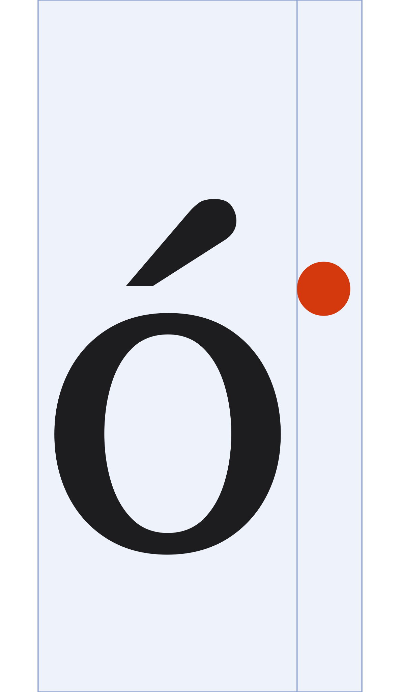

字型如何實作 POJ
我們以 HarfBuzz 逐一測量 24 款字型在 NFC 與 NFD 下的 26 個測試音節，歸納出現行字型實作 o͘ 與調號的四種 OpenType 技術——以及網頁載入時最容易踩到的切塊陷阱。
四種實作技術一覽
以下四張圖皆呈現 ó͘：藍色底框代表各字形的水平進位寬度（advance box），橘色代表字型獨立定位上去的組合附加符號：

A. GPOS 錨點吸附
字母右上設有 topright 錨點，由 mark 將 U+0358 如磁鐵般吸上。
POJ Chhiu-ki、Source Sans 3

B. ccmp 預繪連字
設計師直接繪製完整的 ó͘ 單一字形，由 ccmp 將序列替換成成品。
Lesson One、粉圓、芫荽、TASA、源樣

C. 獨立佔位圓點
U+0358 設為 GDEF 類別 1 基礎字形，在 o 後方自帶微幅寬度。
SIL Charis、Doulos、Gentium

D. 固定疊印／引擎備援
靠固定輪廓座標或瀏覽器猜測位置；遇上大寫或帶調母音便錯位。
Arial、Helvetica、Geneva、Menlo
| 技術路線 | 運作機制 | 代表字型 | 優點 | 缺點 |
|---|---|---|---|---|
A. GPOS mark 錨點 |
o 加上獨立附加符號字形，由 mark（top／topright）與 mkmk 定位 |
Source Sans 3、POJ Chhiu-ki、Arial（僅 U+030D） |
字形數少、利於可變字型、任何帶錨點字母皆可用 | 每一個預組帶調母音（ó ò ô ō ŏ…）都必須補上 topright 錨點，極易遺漏：Source Sans 3 漏了 ŏ Ŏ；一點明體僅在 o ō 設錨點。 |
B. ccmp 預繪連字 |
o 0301 0358 或 ó 0358 → 單一成品字形（如 o_uni0301_uni0358） |
Lesson One、jf open 粉圓、芫荽、TASA、豆腐烏、一點明體、源樣明體、WD-XL | 設計師完全掌控造形與避讓，不受錨點引擎差異影響 | 字形數增加；須同時覆蓋 NFC、NFD 與反向順序；未涵蓋組合會退回方式 A；連字成品若未加入字距微調群組會遺失 o 的字偶距（kerning）。 |
| C. 獨立佔位圓點 | U+0358 設為 GDEF 類別 1 基礎字形並帶正向寬度（Gentium 200、Charis 279、Doulos 255 單位） |
SIL Charis、Doulos、Gentium | 圓點絕不會撞到後續字母（o͘h、o͘ⁿ） | o͘ 略寬；必須維持 GDEF 類別 1（改為類別 3 寬度會被歸零）；從 PDF 複製文字時有時會在點後多出空白。 |
| D. 零寬疊印或引擎備援 | 零寬度符號畫在固定座標，或因完全無 mark 表由引擎猜測 |
Arial（U+0358）、Geneva、Helvetica、Menlo、taigivs 歐文區、豆腐烏（未涵蓋組合） |
零開發成本 | 最多只對單一字母看起來正常；大寫、帶調母音與其他平台皆會失準。 |
A. GPOS mark 錨點
字型設計師在每個基礎字母上標記看不見的座標點：top 供居中聲調使用，topright 供 U+0358 使用；整形引擎再把符號的 _top／_topright 錨點對齊吸附上去。
由於 HarfBuzz 在進入 GSUB/GPOS 前會先轉為 NFC，ō͘ 抵達時是預組的 ō＋U+0358，因此所有預組帶調母音（ó ò ô ō ŏ 與大寫）都必須具備 topright 錨點。又因為 HarfBuzz 的備援定位是「全有或全無」，只要漏掉其中一個，該圓點就會直接掉到 (0, 0)。Source Sans 3 在 ŏ͘ 與 Ŏ͘ 正好呈現這個錯誤：
topright 錨點，圓點掉到 (0, 0)
B. 透過 ccmp 替換預繪字形
設計師直接將 o͘ ó͘ ò͘ ô͘ ō͘ ŏ͘ o̍͘ 及大寫繪製成完整字形，再透過 ccmp 連字規則替換。這樣能對寬幅調號（如長音符、揚抑符）做視覺微調與避讓，類似越南文字型處理 ố／ớ 的做法。
工程上必須避開的陷阱：
- 輸入形式：必須同時涵蓋 NFC（
oacute uni0358）、NFD 標準順序（o uni0301 uni0358）與非正規反向順序（o uni0358 uni0301），且 3 字形規則寫在 2 字形規則之前。 - GDEF 類別：所有預繪連字成品都應歸為 GDEF 類別 1（base）而非類別 2（ligature），確保後續附加符號仍可正確附著。
- 字偶距（Kerning）：須將所有預繪 o͘ 字形加入
o／O的字偶距群組，否則像 Tō͘、o͘v 這類字對會喪失微調。 - 安全網：僅做方式 B 卻沒做 GPOS
mark的字型（如源樣明體與豆腐烏家族）在常見組合上非常漂亮，但遇上未列出的稀有組合時仍會仰賴引擎備援。
C. 獨立佔位圓點（SIL 路線）
SIL 的 Charis、Doulos 與 Gentium 將 U+0358 定義為 GDEF 類別 1 的基礎字形，並給予明確的正向進位寬度（Gentium 200、Charis 279、Doulos 255 單位）。由於圓點佔有獨立水平空間，在 o͘h、o͘k、o͘l、o͘t、o͘ⁿ 等序列中絕不會撞到下一個字的上伸筆畫。
關鍵在於 U+0358 必須維持 GDEF 類別 1：若誤標為類別 3 附加符號，OpenType 整形器會強制將其寬度歸零。此作法的取捨是含 o͘ 的單字會略寬，且從 PDF 複製文字時偶爾會在圓點後多出一個空白。
D. 零寬疊印與整形引擎備援
當字型有畫 U+0358 卻沒有設錨點時：
- 若字型為其他重音符號建了
mark表（如 Arial），HarfBuzz 會完全停用備援定位，把U+0358畫在(0, 0)原始輪廓位置（在 Arial 中會懸空落在字母後方空白處）。 - 若字型完全沒有
mark表（如 macOS 的 Geneva、Helvetica、Menlo 與字咍 taigivs 歐文區），HarfBuzz 會啟動外框盒備援；遇上大寫 Ó͘、Ō͘ 時，備援演算法會將U+0358舉高至包含調號在內的整塊筆畫外框之上，讓圓點高高飄走。
最佳實務：同時結合 A + B
最穩健的 POJ 字型會以ccmp 預繪字形（方式 B）處理所有常見音節以達完美視覺避讓，再以完整的 GPOS mark／mkmk 錨點（方式 A）作為萬用安全網。Lesson One、jf open 粉圓（Huninn）、芫荽 Iansui、TASA Explorer／Orbiter 與 WD-XL 滑油字全數採用 A + B。
可關閉的隱藏開關（liga、clig、case）
OpenType 功能並非全部預設開啟：
- 絕不可把 POJ 組字放進
liga或clig。依 CSS Text Level 3 規範，只要網頁設定了非零的letter-spacing，Chrome、Safari 與 Firefox 都會自動停用選用連字；font-variant-ligatures: none亦同。Microsoft Word 預設也將連字功能關閉（需至「字型 → 進階」手動開啟），許多程式碼編輯器亦然。POJ 組字一律必須放在ccmp。 case在瀏覽器與 Word 中預設關閉——即使套用 CSStext-transform: uppercase也不會啟用case。因此大寫專用調號必須在ccmp中撰寫上下文替換規則，不能只寫在case。- 實測案例 — NunitoPOJ：NunitoPOJ 將部分連字寫在
liga並採非正規順序，因此在 HarfBuzz 中從未觸發；但實測確認即使關閉liga，其ccmp無點 i 與 GPOS 錨點仍能正確顯示 o͘ 與 i̍。
Google Fonts 網頁切塊（unicode-range）實測
為了加快載入速度，Google Fonts CSS API（fonts.googleapis.com/css2）會將每款字型切成多個 unicode-range WOFF2 檔案。我們實測了 Chrome 實際收到的切塊（驗證日期 2026-11-20）：
| Google Fonts 字型家族 | 總切塊數 | 是否包含 U+0358 / U+030D / U+207F | 網頁實際呈現結果 |
|---|---|---|---|
| TASA Explorer | 2（latin、latin-ext） | 無 | 完全沒有傳送 POJ 調號，即使 GitHub 完整版有收錄；網頁上所有 o͘ 與第八調都會退回系統補字。 |
| Source Sans 3 | 7 | 無 | 所有網頁切塊皆移除了 POJ 符號。 |
| EB Garamond | 7 | 無 | 切塊未含，且原字型本來就缺少 U+0358。 |
| 芫荽 Iansui | 108 | 切塊 #104 | 內含專屬台語切塊，收錄 POJ 符號、ḿ ǹ ı ᴺ 與基礎字母。 |
| jf open 粉圓（Huninn） | 111 | 切塊 #106 | 同上，具備專屬台語切塊。 |
pyftsubset）保留清單
在芫荽與粉圓中，普通 o 同時存在於 latin 切塊與台語切塊；o + U+0358 能否留在同一個字型檔內取決於各瀏覽器的叢集補字機制，上線前應於 Chrome、Safari、Firefox 實測。此外，狗公會曉學台語將 TASA Explorer／Orbiter 列在「線頂 Google 字體 白話字台文」底下，直接載入 Google Fonts 的網站均會受影響。（Google Docs／Slides 的傳遞機制尚未實測。）
網頁部署建議：自行託管完整字型檔（或使用 Google Fonts 的 &text= 參數）。若使用 pyftsubset 或建置外掛做字型子集化，務必保留：
- 字碼：
U+0358、U+030D、U+207F、U+1D3A、U+0131、U+0237、ḿ Ḿ ǹ Ǹ 與全部帶調母音； - 排版功能：
ccmp、mark、mkmk（或加上--layout-features='*'）； - 若為 IVS 注音字型：務必保留
cmapformat 14 子表。